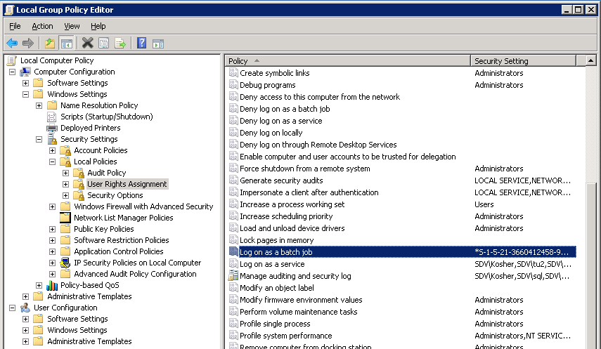
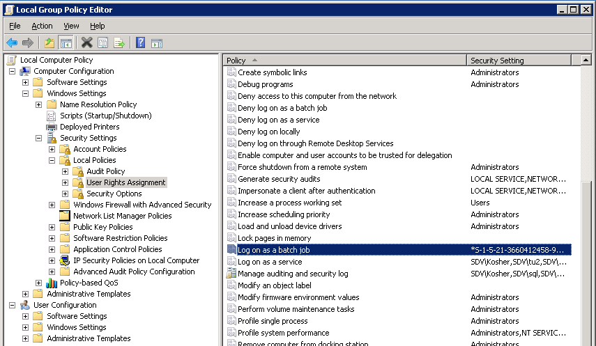

Since this software is used to change/reset passwords and unlock Active Directory (AD)
user accounts, the service account has to have enough permissions to perform these
operations. We recommend using an account which is a member of the Domain Administrators
group and local Administrators group on the computer where the product is installed.
If you do not want to use a Domain Administrator account, on the computer where NetWrix
Password Manager is installed, create an account with the following rights and
permissions. 1. On the machine where the Password Manager service is installed:
- Full access to the NetWrix Password Manager installation directory (Allow Full control security permissions)
- Full access to the registry key HKLMSoftwareWow6432NodeNetWrixPassword Manager (Wow6432Node only for x64 OS) (Allow Full control security permissions)
- The Logon as a service right (added to Local policies > User rights assignment > Logon as a service policy).
 

Alternatively, you can add the service account to the local Administrators group 2. In
Active Directory the service account should have the following rights for all managed
accounts:
- Change Password
- Reset Password
- Read Account Restrictions
- Write Account Restrictions
- Read lockoutTime
- Write lockoutTime
- Read pwdLastSet
- Write pwdLastSet
To grant these rights to the service account in AD, do the following:
- Navigate to Start > Administrative Tools > Active Directory Users and Computers.
- Select View from the main menu and makes sure that the Advanced Features option is selected.
- In the left pane, right click the managed domain node and select Properties from the pop-up menu.
- Open the Security tab and click the Advanced button.
- In the Advanced Security Settings dialog, in the Permissions tab, click the Add button.
- Select the account you want to use a s service account and click OK.
- In the Permission dialog that will open after you have specified an account, in the Object tab, under Apply to, select Descendant User objects from the drop-down list.
- Select the following check boxes in the Allow column:
- Reset Password
- Change Password
- In the Properties tab, under Apply to, select Descendant User objects from the drop-down list.
- Select the following check boxes in the Allow column:
- Write Account Restrictions
- Read Account Restrictions
- Read lockoutTime
- Write lockoutTime
- Write pwdLastSet
- Read pwdLastSet
- Click OK to save the changes.
NOTE. A less privileged service account is not able to unlock and reset passwords for
protected domain groups (domain admins, enterprise admins, etc) because of AdminSDHolder
Access control mechanism.
AdminSDHolder is a container inside Active Directory that maintains a master list of
permissions for objects that are members of privileged groups in Active Directory.
Access control prevents access of non-privileged accounts to this container.
Below are some of the protected groups that cannot be handled without domain admin
rights:
- Administrators
- Domain Admins
- Enterprise Admins
- Schema Admins
- Domain Controllers
- Server Operators
More information about it here:
http://blogs.technet.com/b/askds/archive/2009/05/07/five-common-questions-about-adminsdholder-and-sdprop.aspx